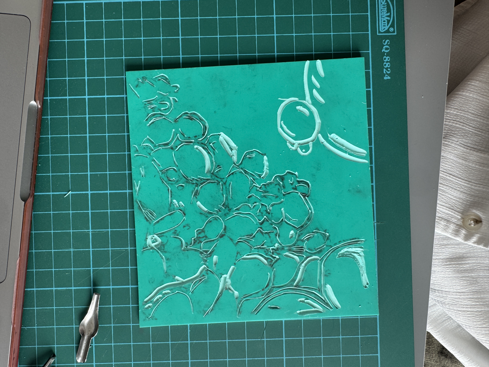
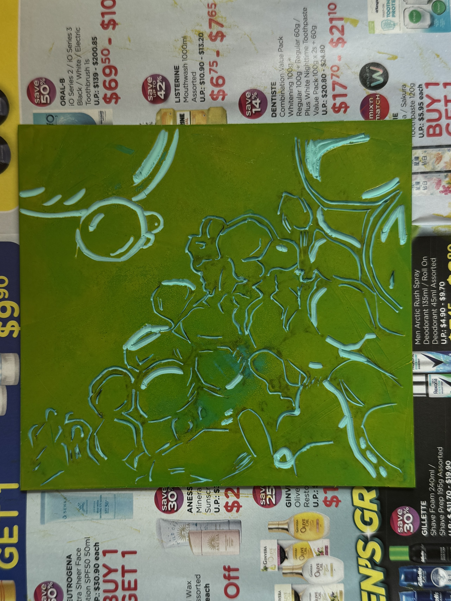
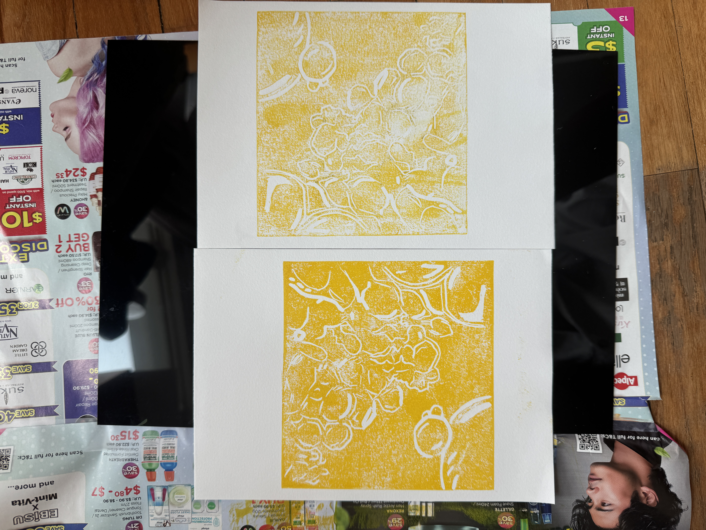
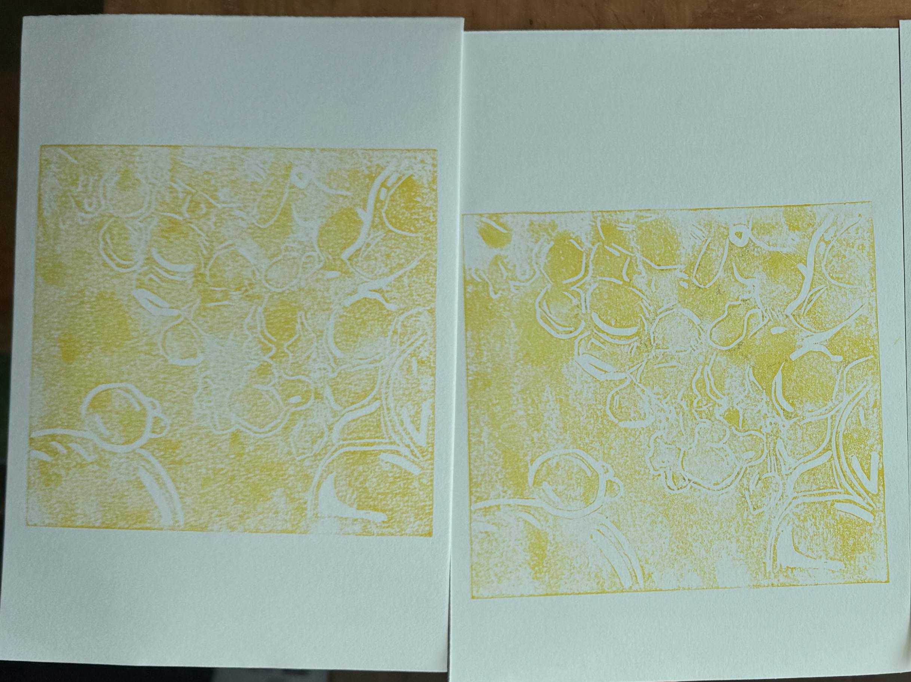

Sketching Process


I began to sketch all the jajanan pasar food on paper. I wanted to draw in different perspectives, so when I do the lino print, if some of the sketches don't look right, I can use another snack that’s derived from another perspective. I decided to redo the sketches rather than use the previous week's because the scale was too big, so I sketched them again to keep the scale as accurate as the real food.
It was also easier for me to sketch rather than do the digital drawing because I didn’t have to think about the colors; I just focused purely on getting the shape as accurately as possible. The colors will come after I carve into the lino block.


I also found some stock images of close-up shots of oil and a banana leaf that I didn’t end up using. It was really difficult for me to photograph oil in real life because it would just create an oily surface, whereas the stock images gave me a clear, detailed picture of the oil. I’m searching for stock images because I didn’t want to explore the food itself; I wanted to explore the food’s textures, cooking techniques, and ingredients.
I’m not scrapping the idea of the food lino; I just thought it would be interesting to explore the food's textures and not limit myself to making the food itself. I believe that even if it's going to take quite some time, with the effort I hope to put into pulling this project together, it will all be worth it.
Color Exploration


During my color exploration, I wanted to experiment with mixing colors and playing with color gradients. In the first few attempts at lino printing, I noticed that the lines and the ink didn’t fully stamp onto the paper. I didn't fully grasp the techniques used in linoleum printing, which is why some parts of the food didn't fully come out.
I also noticed that my carvings in the lino are quite clean; there isn’t a lot of play with the negative spaces. With the snack being there by itself, it feels a little bit isolated; I believe that adding in more colors or textures in the background would help elevate the drawings further. So, in my next exploration, I do hope that I can play with the textures of the food or the food ingredients.




It came out really well. I made sure the lines were intact, there were no missing patches or messy lines in the print. I am satisfied with the result, which encouraged me to want to do more of this exploration. I believe one thing that is successful when I’m doing lino is making sure the paint has an even surface before printing. I'll keep using this technique as I make more lino prints.
Reflection
There is another medium that I also wanted to explore, which is stencils. I noticed that I'm taking too long with my explorations when it comes to lino printing, so I wanted to do something new. In a span of one week, I was only able to produce fewer than 5 outcomes, which I hope I can do more when I’m doing stencils.
I don’t want to stop doing lino printing completely, but I've thought about continuing to do lino printing to explore textures and colors. When I make linoprints of food, I feel they lack the food's visual appeal, that's why I feel like stencils can make it easier and more experimental.